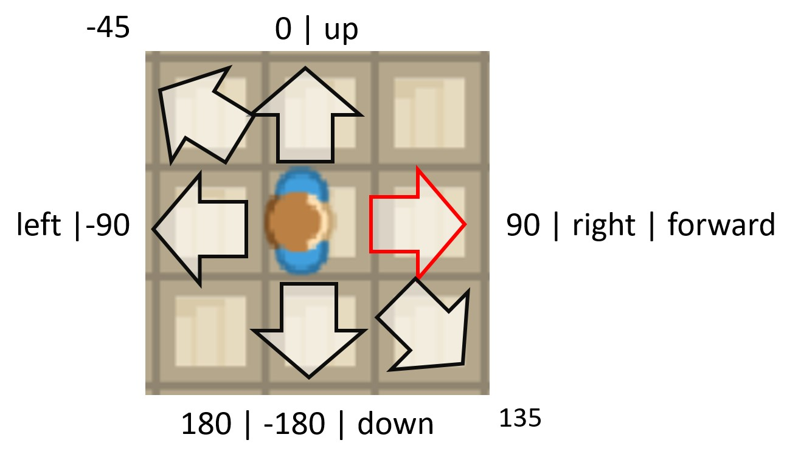

Directions¶
Directions in Miniworldmaker¶
Directions are handled exactly as in the Scratch programming language, see Scratch-Wiki.
The default direction is 0°. All tokens are looking “up”

0° or “up”: up
90° or “right”: Move right
-90° or “left”: Move left
180° or “down”: Move down
“forward”: Current direction
Methods¶
point_in_direction¶
Sets direction of token:
-
Token.point_in_direction(direction) → int[source] Token points in given direction.
You can use a integer or a string to describe the direction
- Parameters
direction as integer or string (The) –
- Options
0, “up” - Look up
90, “right”, - Look right
-90, “left”, - Look left
-180, 180, “down” - Look down

Examples
Move in a direction with WASD-Keys
>>> def on_key_down(self, keys): >>> if "W" in keys: >>> self.direction = "up" >>> elif "S" in keys: >>> self.direction = "down" >>> elif "A" in keys: >>> self.direction = "left" >>> elif "D" in keys: >>> self.direction = "right" >>> self.move()
turn_left¶
Turns token left by degrees degrees

turn_right¶
Turns token right by degrees degrees